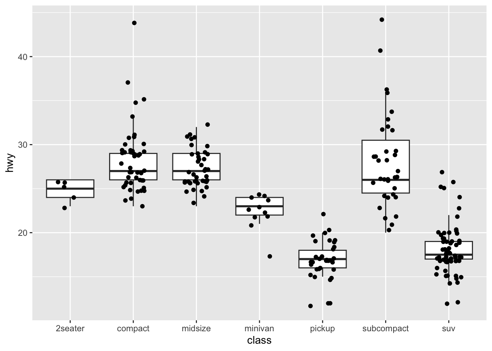
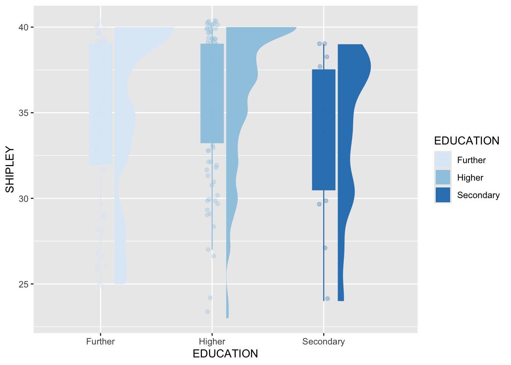

| participant_ID | mean.acc | mean.self | study | AGE | SHIPLEY | HLVA | FACTOR3 | QRITOTAL | GENDER | EDUCATION | ETHNICITY |
|---|---|---|---|---|---|---|---|---|---|---|---|
| studytwo.1 | 0.4107143 | 6.071429 | studytwo | 26 | 27 | 6 | 50 | 9 | Female | Higher | Asian |
| studytwo.10 | 0.6071429 | 8.500000 | studytwo | 38 | 24 | 9 | 58 | 15 | Female | Secondary | White |
| studytwo.100 | 0.8750000 | 8.928571 | studytwo | 66 | 40 | 13 | 60 | 20 | Female | Higher | White |
| studytwo.101 | 0.9642857 | 8.500000 | studytwo | 21 | 31 | 11 | 59 | 14 | Female | Higher | White |
| studytwo.102 | 0.7142857 | 7.071429 | studytwo | 74 | 35 | 7 | 52 | 18 | Male | Higher | White |
| studytwo.103 | 0.7678571 | 5.071429 | studytwo | 18 | 40 | 11 | 54 | 15 | Female | Further | White |
3 Introduction to visualization
3.1 Overview
Welcome to your overview of the work we will do together in Week 9.
This week, we will focus on perspectives and practices in data visualization.
In a wide range of professions, you will benefit if you can exercise skills in the capacity to produce and to interpret data visualizations.
The power to produce informative eye-catching visualizations in R is industry-leading, everywhere from news media to medical science. This means that learning how to produce visualizations using R will give you an advantage in many settings.
Our materials are designed to help you to think about what you are doing — to understand the aims of the practical steps — as well as to learn about producing professional effective data visualizations. This is because, as you progress in your careers, you may come to manage as well as to direct the development of visualizations, so we need to see what best practice looks like.
We will continue to work with data collected for the Clearly understood project (Chapter 2) because we think that working with these data in this research context will help you to make sense of the data, and to see why we ask you to practise the skills we are teaching.
3.2 Our learning goals
This week, we focus on both developing your critical thinking and strengthening your practical skills: our objectives blend concepts and skills targets.
Our learning objectives: — what are we learning about?
We are working together to help you:
- Goals — Formulate questions you can ask yourself to help you to work effectively
- Audience — Understand the psychological factors that affect your impact
- Development — Work reflectively through a development process
- Implement — Produce visualizations in line with best practice
Our assessment targets: — how do you know if you have learned?
We are working together so you can:
- Goals — Identify a set of targets for a development process in your professional teams
- Audience — Explain what you need to do to make a visualization effective
- Development — Locate yourself within the stages of the development process
- Implement — Produce visualizations that look good and are useful
3.3 Learning resources
You will see, next, the lectures we share to explain the concepts you will learn about, and the practical visualization skills you will develop. Then you will see information about the practical exercises you can use to build and practise your skills.
Every week, you will learn best if you first watch the lectures then do the practical exercises.
You will realize that we are helping to build familiarity and fluency in your practical skills through the accumulation of practice, and the step-by-step extension of capabilities.
Linked resources
- In PSYC411: in Week 3, we started learning about histograms, bar charts, scatterplots, and boxplots; in Week 4, we revisited bar charts and scatterplots; in Week 5, we revised boxplots.
- In PSYC411: in Week 7, we consolidated and extended your skills with scatterplots, and practised how to read plots.
- In PSYC411: in Week 8, we consolidated and extended your skills with both histograms and scatterplots; learning to combine analysis with visualization.
- In PSYC413: in Week 9, we explore more broadly why being able to produce and read data visualizations is now an important sought-after skill.
- In PSYC411: in Week 10, we explore how to use convenience functions to do visualization tasks automatically. We reach the most advanced kind of plots: presenting model estimates with raw data.
- In Chapter 4, as optional reading, we present a more extensive discussion of data visualization, explaining perspectives, and enabling you to work with richer data-sets.
Throughout our materials, we have called your attention to the ecosystem of free, high-value, information that is available to people working with R. That is because this information is an important benefit of learning to use R.
- This week we grow your capacity to find, and to use, the information you need.
- This will help to build your independence for the work you will do in your future professional careers.
3.3.1 Lectures
The lecture materials for this week are presented in four short parts.
Click on a link and your browser should open a tab showing the Panopto video for the lecture part.
- Part 1 (12 minutes) Data visualization perspectives and practices: The concepts and skills we will learn about in week 9: what we will learn and how we will know if we have learned it, the different kinds of goals we think about when we make visualizations, discovery and communication.
- Part 2 (8 minutes): the evidence base, the psychology of seeing and understanding visual information, and how we know what we should do in data visualization.
- Part 3 (19 minutes): why visualization is important, and why the things we can do to show variation and uncertainty matter, when we communicate evidence to audiences.
- Part 4 (25 minutes): the key skills —
{ggplot2}as the grammar of graphics, why we have been working on building and editing plots step-by-step, what you can do in future work.
3.3.2 Lecture slides
Download the lecture slides
The slides presented in the videos can be downloaded here:
- The slides exactly as presented (7 MB).
You can download the web page .html file and click on it to open it in any browser (e.g., Chrome, Edge or Safari). The slide images are high quality so the file is quite big and may take a few seconds to download.
We are going to work through some practical exercises, next, to develop your critical thinking and practical skills for working with linear models.
3.3.3 Practical materials: data and R-Studio
We will work with two data files which you can download by clicking on their names (below):
Once you have downloaded the files, you will need to upload them to the R-Studio server to access and use the R files.
Important
Here is a link to the sign-in page for R-Studio Server
3.3.4 Practical materials guide
As usual, you will find that the practical exercises are simpler to do if you follow these steps in order.
- The data — We will take a quick look at what is inside the data files so you know what everything means.
- The
how-toguide — We will go through the practical analysis and visualization coding steps, showing all the code required for each step. - The
practicalexercises — We will set out the tasks, questions and challenges that you should complete to learn the practical skills we target this week.
This week — Week 9 — our emphasis is on finding and making use of online information.
- This work will enable you to find solutions for yourself in your professional working lives
- to figure out practical how and why answers to the questions you will face.
Week 9 parts
- Set-up
- Load the data
- Revision: locate and use
{ggplot2}reference information. - New: locate and use tutorial or how-to information.
- New: locate and use StackOverflow information.
There are three main sources of information you can access for free online:
- The people who write software like the
{tidyverse}or{ggplot2}libraries provide manuals, reference guides and tutorials. This information is often written as free web books. - Other people write tutorials or guides or teaching materials designed to show learners (like us) how to use R functions or to do certain things using R. They may present these tutorials or guides as web books, blog sites or video tutorials, e.g., on Youtube or TikTok.
- Many people post questions and answers to discussion forums like Stackoverflow.
Important
Learning how to find, understand and use this information is important because:
- A lot of scholarly and technical information is online and free.
- Being able to locate and to use this information is often the way that most professionals work out what they want to do, and how they can do it, if they have a problem or a question.
- This means you get an advantage if you learn how to do that here.
3.3.4.1 The data files
Each of the data files we will work with has a similar structure.
Here are what the first few rows in the data file study.two.gen looks like:
Tip
The webpage has a slider under the data table window, so you can scroll across the columns: move your cursor over the window to show the slider.
When you look at the data table, you can see the columns:
participant_IDparticipant codemean.accaverage accuracy of response to questions testing understanding of health guidancemean.selfaverage self-rated accuracy of understanding of health guidancestudyvariable coding for what study the data were collected inAGEage in yearsHLVAhealth literacy test scoreSHIPLEYvocabulary knowledge test scoreFACTOR3reading strategy survey scoreGENDERgender codeEDUCATIONeducation level codeETHNICITYethnicity (Office National Statistics categories) code
3.3.4.2 The how-to guide
We will take things step-by-step.
Make sure you complete each part, task and question, in order, before you move on to the next one.
3.3.4.3 How-to Part 1: Set-up
To begin, we set up our environment in R.
3.3.4.3.1 How-to Task 1 – Run code to empty the R environment
rm(list=ls()) 3.3.4.3.2 How-to Task 2 – Run code to load libraries
Load libraries using library().
library("tidyverse")3.3.4.4 How-to Part 2: Load the data
3.3.4.4.1 How-to Task 3 – Read in the data file we will be using
The code in the how-to guide was written to work with the data file:
study-one-general-participants.csv.
Read in the data file – using read_csv().
study.one.gen <- read_csv("study-one-general-participants.csv")3.3.4.4.2 How-to Task 4 – Inspect the data file
Use the summary() function to take a look.
summary(study.one.gen) participant_ID mean.acc mean.self study
Length:169 Min. :0.3600 Min. :3.440 Length:169
Class :character 1st Qu.:0.7600 1st Qu.:6.080 Class :character
Mode :character Median :0.8400 Median :7.080 Mode :character
Mean :0.8163 Mean :6.906
3rd Qu.:0.9000 3rd Qu.:7.920
Max. :0.9900 Max. :9.000
AGE SHIPLEY HLVA FACTOR3
Min. :18.00 Min. :23.00 Min. : 3.000 Min. :34.00
1st Qu.:24.00 1st Qu.:33.00 1st Qu.: 7.000 1st Qu.:46.00
Median :32.00 Median :35.00 Median : 9.000 Median :51.00
Mean :34.87 Mean :34.96 Mean : 8.905 Mean :50.33
3rd Qu.:42.00 3rd Qu.:38.00 3rd Qu.:10.000 3rd Qu.:55.00
Max. :76.00 Max. :40.00 Max. :14.000 Max. :63.00
QRITOTAL GENDER EDUCATION ETHNICITY
Min. : 6.00 Length:169 Length:169 Length:169
1st Qu.:12.00 Class :character Class :character Class :character
Median :13.00 Mode :character Mode :character Mode :character
Mean :13.36
3rd Qu.:15.00
Max. :19.00 3.3.4.5 How-to Part 3: Revision – locate and use {ggplot2} reference information
We have called your attention to {ggplot2} reference information before.
This time, we take you through the steps involved in exploiting this information efficiently to produce more plots that communicate more effectively.
3.3.4.5.1 How-to Task 5 – Find out how to produce layered boxplots to examine if vocabulary scores are different for people with different education levels
You have seen how to produce boxplots before, in previous classes (weeks 3 and 5): here we add a twist to make the plot dramatically more informative.
Tip
A box plot is a visualization designed to enable you to visualize the distribution of scores on a numeric variable, sometimes so that you can compare the distribution of scores on that variable in different groups or conditions.
This task is both about finding out how to do things (generally), here, using {ggplot2} reference information, and also about finding out how to produce a particularly effective form of data visualization, combining summary estimates with raw data observations.
We can break this task into steps:
- Find relevant and useful information;
- Locate example code;
- Run the example code;
- Edit the code to do the task with the
study.one.gendata.
We want to make a boxplot. You have done that before. But this time we want to make a plot that shows (i.) the summary statistics (median and quartile) information of the boxplot plus (ii.) the raw observation information about sample data values that you see in scatterplot points. That is because, in the lectures on data visualization, we learned about the ways in which summaries can sometimes obscure what is going on with the sample data (think of Anscombe’s Quartet).
How do we produce this kind of plot?
- A professional would take the wish-list of aims (i.) and (ii.) and start looking for information online to figure out how to produce the kind of plot they want.
We work through the steps in order:
1. Find relevant and useful information
You find the information you need by doing keyword searches online: but what are the keywords?
Tip
Hint: Do a search using the words: ggplot reference.
That will get you results including this one:
How do you know if you can or should use this information?
- You know this source is ‘official’, relevant, and useful because you can see the hex badge (a hexagon shaped image): “ggplot2”.
We need more specific information on boxplots in the {ggplot2} library reference information: how do we find it?
- You can do a search of the reference index, or you can expand your set of keywords.
Tip
We are looking specifically for information on box plots so do a search of the web page e.g. using CMD-F (on a Mac) or CTRL-F (on a PC) using the words: box or boxplot
That will get you a link – click on it:
2. Locate example code
Most R developers design their information web pages in the same way:
- first, they show a list of arguments you can edit to make choices about how functions like
geom_boxplot()work; - second, they explain what the object – here, a boxplot – represents;
- third, they may give you information about what information the function can work with;
- fourth, they give you example code \(\rightarrow\) this is the bit you want.
Tip
Example code can be run without reading in any extra data, once you have run
library(tidyverse)Scroll through the page, looking for an example plot that looks like what we want: a plot which shows (i.) the summary statistics (median and quartile) information of the boxplot plus (ii.) the raw observation information (points) of the sample data.
Do you see it?
Tip
You can see the example shown under this line of code.
p + geom_boxplot(outlier.shape = NA) + geom_jitter(width = 0.2)3. Run the example code
Copy the first bit of example code you see and paste it directly into the R-Studio Console and run it, or paste it into the Script window and run it:
- You have to be careful. Read through the sequence of example code paying attention to each element.
Tip
If you run this line of code, you will get an error, at first.
p + geom_boxplot(outlier.shape = NA) + geom_jitter(width = 0.2)This is because the p + tells you that somewhere previously the sequence of examples builds a part of the plot p to which the next parts geom_boxplot(outlier.shape = NA) + geom_jitter(width = 0.2) are added.
- You need to make sure you run the full sequence of example code to get the plot.
Tip
If you run this line of code, it will work.
p <- ggplot(mpg, aes(class, hwy))
p + geom_boxplot(outlier.shape = NA) + geom_jitter(width = 0.2)
In this sequence of code:
p <- ggplot(mpg, aes(class, hwy))first constructs a plot object, calledp– nothing will appear in thePlotswindow but the objectpwill appear in theEnvironmentwindow in R-Studio.p + geom_boxplot(outlier.shape = NA)adds the objectgeom_boxplot()to the objectp– this step is where something is produced in thePlotswindow.+ geom_boxplot(outlier.shape = NA) + geom_jitter(width = 0.2)adds one plot on top of another.
This style of building a plot step-by-step enables you to construct quite complex plots, with multiple layers.
In the plot you can see that we get what we want. The plot shows:
- Using
geom_boxplot(outlier.shape = NA)– a summary of the data, including the median (the thick line in the middle of each box) and the 25% and 75% quartiles (the lower and upper edges of the box) of the observed values for the variablehwy, for different groups ofclass. - Using
geom_jitter(width = 0.2)– the raw observations (ofhwyperclass) that the boxplots summarize, shown as the black points superimposed on the boxplots.
Tip
The example code from the {ggplot2} reference demonstrates why we want to produce this kind of plot:
- We can see that the boxplots, by their differing heights, show us the differences between groups in average outcomes (here,
hwy, the y-axis variable). - We can also see that the points show us that showing just the boxes hides the fact that different groups (here,
classof car) are associated with differences in samples (note the differences in the number or scatter of points).
4. Edit the code to do the task with the study.one.gen data
Now we know that we can produce the kind of plot we want, and we have seen the code that would produce that kind of plot.
The next step is to take the code structure that we see in the example and convert it so that kind of code does the same work for our own purposes.
Let’s say that I want to produce a boxplot, showing raw data observations of accuracy of understanding, mean.acc, for each level of education in the study.one.gen data-set.
How do we convert the example code to produce the same kind of plot with our data?
Hint: You need to change the data, and the aesthetic mappings – from this:
p <- ggplot(mpg, aes(class, hwy))
p + geom_boxplot(outlier.shape = NA) + geom_jitter(width = 0.2)- to this:
p <- ggplot(data = study.one.gen, aes(x = EDUCATION, y = mean.acc))
p + geom_boxplot(outlier.shape = NA) + geom_jitter(width = 0.2)Notice:
- You can write code quite concisely, like this
ggplot(mpg, aes(class, hwy))or more fully, like thisggplot(data = mpg, aes(x = class, y = hwy)). - You change the dataset from the example
mpgdata to our datastudy.one.gen. - When you construct a boxplot,
xmust be mapped=to a categorical variable: a nominal variable or factor likeEDUCATION. - When you construct a boxplot,
ymust be mapped=to a numeric variable: a continuous or interval variable likemean.acc. geom_jitter(width = 0.2)is new: we add that to show the raw data observations.
Now take a look at the plot we have made.
p <- ggplot(data = study.one.gen, aes(x = EDUCATION, y = mean.acc))
p + geom_boxplot(outlier.shape = NA) + geom_jitter(width = 0.2)You can make two useful observations:
- Mean accuracy of understanding (of health information) is different in different education groups, on average – that is what the heights of the middle lines in the boxplots tell us.
- The distribution of sample observations is really different for different education groups in this sample. This second observation might make us a bit uncertain about the extent to which the average outcome differences (comparing mean accuracy) reflect what we would see in the wider population.
What are we learning here?
There are two lessons:
- It is very useful to be able to find, read, and convert example code in online help information. Getting practice doing this will really helpful, not only to make it easier for you to do what we ask you to do but also for you to do things you decide you want to do.
- In R, the plotting code is designed to work so that we can build complex plots, layer by later.
- In general, it is helpful to be able to combine summaries with raw data.
Further information you can explore
You can read more about boxplots here:
https://ggplot2.tidyverse.org/reference/geom_boxplot.html
You can read more about jittering here:
3.3.4.6 How-to Part 4: New – locate and use tutorial or how-to information
The official information provided by the developers of {ggplot2} or {tidyverse} are very useful but there is a whole other world of information — many hundreds of web-sites — provided by people interested in writing and sharing how-to guides and tutorials to highlight solutions to problems or answers to questions they, or others, have encountered.
3.3.4.6.1 How-to Task 6 – Find out how to modify the colour of the boxplots to examine if vocabulary scores are different for people with different education levels, and to distinguish education by colour
This time, we again want to produce some boxplots, but we want to modify the colours of the boxes to communicate information about the groups in our sample data to the reader.
- We are using colour, here, not for decoration but as a third dimension of information, in addition to the height and the horizontal position of the boxes.
How do we change the colour of plot elements by linking colour differences to data differences?
We break this task into the same steps we followed before:
- Find relevant and useful information;
- Locate example code;
- Run the example code;
- Edit the code to do the task with the
study.one.gendata.
1. Find relevant and useful information
As before, we begin with a keyword search.
Tip
Hint: Do a search using the words: ggplot boxplot colour
That will get you results including this one:
https://r-graph-gallery.com/264-control-ggplot2-boxplot-colors.html
This source is not official linked to the {ggplot} project so now you have to decide if it is useful: how do you do that?
Hint: You can decide simply if a source is useful by (1.) trying the example code (does it work?) and evaluating if you understand how it works (do you understand why it works?)
2. Locate example code
Most tutorial or how-to writers design their web pages in the same way:
- first, they identify what the question or problem is they are going to help you with;
- second, they explain what they will do;
- third, they may give you example code \(\rightarrow\) this is the bit you want.
Tip
Example code is often highlighted – can you see it in the webpage?
https://r-graph-gallery.com/264-control-ggplot2-boxplot-colors.html
3. Run the example code
How do you this?
- Usually, tutorial writers tell you first what libraries you need to load, do that, then run their example code.
Tip
Hint: Copy a chunk of example code and paste it directly into the Console and run it, or paste it into the Script window and run it:
ggplot(mpg, aes(x=class, y=hwy, fill=class)) +
geom_boxplot(alpha=0.3) +
theme(legend.position="none") +
scale_fill_brewer(palette="BuPu")In this sequence of code:
ggplot(mpg, aes(x=class, y=hwy, fill=class))– tells R to mapxtoclassto distinguish different groups by left-right position, and y tohwyto show outcomehwyscores by height. What is new here is this bitfill=classwhich tells R to colour the insides of the boxes with different colours for different classes.geom_boxplot(alpha=0.3) +– tells R to draw boxplots, and reduce the opacity of the boxes (increase transparency).theme(legend.position="none") +– tells R to hide the legend.scale_fill_brewer(palette="BuPu")– tells R to use the blue-purple Brewer colour palette to draw the colours.
So far, you have been using the default colour palette – sets of colours – that are built-in in R, or in {ggplot2} but there are many more palettes available.
4. Edit the code to do the task with the study.one.gen data
The next step is to take the code structure that we see in the example and convert it so that kind of code does the same work for our own purposes.
Let’s say that I want to produce a boxplot, showing the average accuracy of understanding, mean.acc, for each level of education in the study.one.gen data-set.
- This will produce a set of boxplots. Each boxplot summarizes the
mean.accscores for a separate (education level) group. Now, I want to draw each boxplot in a different colour so different education levels are marked by different colours.
How do we convert the example code to produce the same kind of plot with our data?
Hint: You need to change the data, and the aesthetic mappings – from this:
ggplot(mpg, aes(x=class, y=hwy, fill=class)) +
geom_boxplot(alpha=0.3) +
theme(legend.position="none") +
scale_fill_brewer(palette="BuPu")- to this:
ggplot(study.one.gen, aes(x=EDUCATION, y=mean.acc, fill=EDUCATION)) +
geom_boxplot(alpha=0.3) +
theme(legend.position="none") +
scale_fill_brewer(palette="BuPu")Notice:
- You need to make sure that you copy a complete chunk of code:
- including
ggplot() - including
aes() - including
geom_boxplot() - including
scale_fill_brewer()
- You change the data-set name to
study.one.genand you change thex=andy=aesthetic mappings. - To change the colour of the boxplots, you add:
fill=EDUCATIONas an argument to the aesthetic mappings inaes(...) scale_fill_brewer()adds in the colour using the Brewer colour-blind friendly palette.
3.3.4.6.2 How-to Task 7 – Can you find out more information about colour palettes?
Hint: Do a search using the words:
ggplot colour palettesggplot colour blind friendly palettesggplot cookbook colour palettes
Results include:
https://ggplot2-book.org/scales-colour
- or:
These sources are quite technical in places, can you find useful example code?
What are we learning here?
You have seen, previously, that it is quite straightforward to change the colours of things in plots.
Here, we are learning that:
- you can use colour to communicate key information about data;
- you can choose colours deliberately to ensure accessibility (by using colour blind palettes) or to suit your tastes.
Further information you can explore
There are several famous colour palettes that have been developed:
- Viridis:
https://cran.r-project.org/web/packages/viridis/vignettes/intro-to-viridis.html
- Brewer:
https://ggplot2.tidyverse.org/reference/scale_brewer.html
- MetBrewer provides colour palettes matched to famous art works in the Metropolitan Museum of Art in New York:
https://www.blakerobertmills.com/my-work/met-brewer
And some people have contributed deep thinking about how and why we should different colour schemes in different contexts or for diverse audiences:
Important
Make intentional choices when you use colour!
3.3.4.7 How-to Part 5: New – locate and use StackOverflow information
Everybody who uses R professionally uses StackOverflow all the time.
- It is a huge, useful, resource of helpful information.
- Most of the time, if you do a search for answers to a question about using R – for data analysis, or plotting – the search will take you to a StackOverflow discussion page, sooner or later.
Let’s learn how to use this resource.
3.3.4.7.1 How-to Task 7 – Find out how to export a nice boxplot so you can include it in a report
In writing a report, we often need to insert an image file.
- You have been drawing some plots.
- You need to save the plots so that you can use the plots in a report.
Tip
People sometimes paste copies of screenshots of plots into reports. Sometimes, the plots look bad because they are low resolution, or because they are squashed into the wrong aspect ratio.
There is no need for this.
- You can export or save the plot to an image file.
- You can save the file in a high resolution.
- You can make sure that the image has an aspect ratio that looks good.
How do you do this?
We break this task into the same steps we followed before:
- Find relevant and useful information;
- Locate example code;
- Run the example code;
- Edit the code to do the task with the
study.one.gendata.
1. Find relevant and useful information
You find the information you need by doing keyword searches online.
Tip
Hint: Do a search using the words: how to export ggplot
That will get you results including this one:
https://ggplot2.tidyverse.org/reference/ggsave.html
This is the official {ggplot2} library reference information on how to save plots.
Notice:
- This time, the example code at the end of the web page may not be helpful to everyone.
- The usage information at the beginning tells you what you need to know but you will have to look up what arguments like ‘device’ or ‘dpi’ mean, and you will need to experiment a bit, trying different arguments, to get it to work for you.
- Let’s move on.
Tip
Hint: Do a search using the words: how to export ggplot
That will also get you results including this one:
https://stackoverflow.com/questions/38907514/saving-a-high-resolution-image-in-r
This is what we want: the example code, you will find, is usable and it is clearly explained.
Notice:
- On StackOverflow, people posts questions and then other people post answers to those questions.
- Still others can up-vote or down-vote the questions and the answers.
- This system means that the most interesting or useful questions are more likely to appear in your search results when you do searches with the right key words.
Important
In working with R: if you have a question someone has usually asked your question before, and someone else has usually posted an answer to that question.
- As a rule: every question you ever have has been answered in a StackOverflow discussion.
You just need to be able to find that discussion, and to be able to use the answer information.
Here, you can see that the discussion has been viewed 258k times (a lot).
- Many people have up-voted the question because it is so important.
- Many people have up-voted the answers to the question because they are so useful.
2. Locate example code
On Stackoverflow, in response to any one question, different people may post alternative answers.
- Some students may be concerned that there is no one right answer.
- In mathematics, there are right or wrong answers but this here is something different: we are working out how to do something with a computer.
- The fact that there may be alternative different ways of doing the same task is a fair reflection of the reality that with the same set of tools
- different experts can reasonably prefer different approaches or methods.
Here, let’s just pick the simplest example:
tiff("test.tiff", units="in", width=5, height=5, res=300)
# insert ggplot code
dev.off()3. Run the example code
What happens if you run this example code?
tiff("test.tiff", units="in", width=5, height=5, res=300)
# insert ggplot code
dev.off()Nothing.
Notice this bit: insert ggplot code.
We have to fix that.
4. Edit the code to do the task with the study.one.gen data
What the authors of the answer are telling you to do is to write your bit of code to produce a plot where they say: insert ggplot code.
Let’s do that:
tiff("my-plot.tiff", units="in", width=5, height=5, res=300)
ggplot(study.one.gen, aes(x=EDUCATION, y=SHIPLEY, fill=EDUCATION)) +
geom_boxplot(alpha=0.3) +
theme(legend.position="none") +
scale_fill_brewer(palette="BuPu")
dev.off()quartz_off_screen
2 Notice:
- This works but it may appear again as if nothing has happened.
- But look in R-Studio in the
Fileswindow (bottom right screen). - Click on the `Files’ tab.
- Sort the list of files by date by clicking on the
Modifiedcolumn header. - You should see the file:
my-plot.tiffin theFilesspace. - You can download this file by ticking the box.
Now let’s go back to the way that the {ggplot2} library information recommends.
- Take a look at the second answer to the Stackoverflow question:
ggplot(data=df, aes(x=xvar, y=yvar)) +
geom_point()
ggsave(path = path, width = width, height = height, device='tiff', dpi=700)Adapt the example code to do the task:
ggplot(study.one.gen, aes(x=EDUCATION, y=SHIPLEY, fill=EDUCATION)) +
geom_boxplot(alpha=0.3) +
theme(legend.position="none") +
scale_fill_brewer(palette="BuPu")ggsave(filename = 'my-plot-2.tiff', device='tiff', dpi=700)Saving 7 x 5 in imageNow you should see:
- A plot appear in the
Plotswindow in R-Studio. - And a plot appear in the
Fileswindow in R-Studio.
Notice:
- I deleted every argument I was not interested in using, e.g.
width = ...andheight = ... - I gave the file a new name, so that you can see that this works as well as the
dev.off()method
Which method do you prefer?
What are we learning here?
We are learning two things:
- StackOverflow has many of the answers you will need, now, and later if you continue to use R.
- You can save the image files you make for use in your reports.
Further information you can explore
Here’s a blog post by Cedric Scherer:
https://www.cedricscherer.com/2019/08/05/a-ggplot2-tutorial-for-beautiful-plotting-in-r/
- which covers many of the issues we have been discussing.
3.3.4.8 The practical exercises
Now you will progress through a series of tasks, and challenges, to test what you have learnt.
What we want to do, here, is to ensure that you can access and use online information so that you can:
- demonstrate you understand what you are doing when you find out how to do things;
- identify your options when you assess the online information about coding or data analysis or plotting.
Getting practice learning to do these things will help you generally.
Warning
Now we will work with the data file
study-two-general-participants.csv
We again split the steps into into parts, tasks and questions.
- Set-up
- Load the data
- Revision: locate and use
{ggplot2}reference information. - New: locate and use tutorial or how-to information.
- New: locate and use Stackoverflow information.
Tip
- The
how-toguide showed you ways of doing these tasks. - Now use the hints and tips to complete the
practical exercisesthat follow.
We are going to work through the following tasks, split into separate parts.
Important
An answers version of the workbook will be provided after the practical class.
3.3.4.9 Practical Part 1: Set-up
To begin, we set up our environment in R.
3.3.4.9.1 Practical Task 1 – Run code to empty the R environment
rm(list=ls())3.3.4.9.2 Practical Task 2 – Run code to load relevant libraries
library("ggdist")
library("tidyverse")You may need to load other libraries as you progress.
Notice, here, that we are using a library we have not used before: {ggdist}.
3.3.4.10 Practical Part 2: Load the data
3.3.4.10.1 Practical Task 3 – Read in the data file we will be using
The data file for the practical exercises is:
study-two-general-participants.csv
Use the read_csv() function to read the data file into R.
Code
study.two.gen <- read_csv("study-two-general-participants.csv")When you code this, you can choose your own file name, but be sure to give the data object you create a distinct name e.g. study.two.gen.
3.3.4.10.2 Practical Task 4 – Inspect the data file
Use the summary() function to take a look.
Code
summary(study.two.gen)3.3.4.11 Practical Part 3: Revision – locate and use {ggplot2} reference information
3.3.4.11.1 Practical Task 5 – Find out how to produce boxplots to examine if vocabulary scores are different for people with different education levels
Specifically, find out how to produce a plot comprising:
- boxplots showing a summary of vocabulary scores for people with different education levels;
- plus a scatterplot showing individual vocabulary scores for each person in the data-set.
We did this in the how-to guide: check it out before going on, if you are unsure.
- Here, we want to dig in to the information you find to show where you need to look, and what attention you need to invest, to understand the information you see.
We break this task into the same steps we followed before:
- Find relevant and useful information;
- Locate example code;
- Run the example code;
- Edit the code to do the task with the
study.two.gendata.
1. Find relevant and useful information
Hint: If you have never created a box plot before, a good place to start is the {ggplot2} library reference information.
Q.1. What keywords can you use to find the
{ggplot2}library reference information?
Q.2. What does a boxplot represent? In other words, what summary statistics do the features of a boxplot display?
Hint: You need to search the reference information page for the key information about summary statistics.
2. Locate example code
Q.3. Can you find example code showing how to produce a boxplot that allows you to examine if vocabulary scores are different for people with different education levels, where different levels are shown in different colours?
3. Run the example code
Code
The example code, when you put it together, and adapt it for your needs, will look like this:
p <- ggplot(mpg, aes(class, hwy, colour = class))
p + geom_boxplot(outlier.shape = NA) + geom_jitter(width = 0.2)
Tip
The free online reference information is very helpful but it requires a bit of work to make use of it. This is natural, the authors of the information don’t know you and your situation.
- This is what we are learning to do here.
You will need to understand two things before you move on.
Q.4. Can you explain what
geom_jitter()does?
Q.5. Can you explain what “overplotting” means?
4. Edit the code to do the task with the study.two.gen data
Q.6. Can you edit and run the example code to produce a complex plot comprising:
- boxplots showing a summary of vocabulary scores for people with different education levels;
- plus a scatterplot showing individual vocabulary scores for each person in the data-set;
- with the boxes and the points representing vocabulary score data for different levels shown in different colours.
Now look at the plot you have produced and critically evaluate it.
Q.7. What does the plot tell you about the average (median) vocabulary (
SHIPLEY) score recorded for people in thestudy.two.gendata-set who report different education levels?
Q.8. What does the plot tell you about the individual, i.e., per-person vocabulary (
SHIPLEY) score recorded for people in thestudy.two.gendata-set who report different education levels?
3.3.4.12 Practical Part 4: New – locate and use tutorial or how-to information
3.3.4.12.1 Practical Task 6 – Find out how to construct a rain cloud plot
We can break this task into the usual steps:
- Find relevant and useful information;
- Locate example code;
- Run the example code;
- Edit the code to do the task with the
study.two.gendata.
Rain cloud plots are now a popular visualization that incorporates elements of the boxplot, the scatterplot and the density plot to give the viewer summary information about the distribution of scores on a variable and also giving information about the variability of outcomes.
We work through the steps in order:
1. Find relevant and useful information
Hint
You can do an effective search using the words: how to ggplot rain cloud plot
Q.9. There are reasons for doing the things we ask you to learn to do. Can you explain briefly why rain cloud plots are useful?
Hint
People often explain why or how to do things in academic articles. A good source of information for the answer to this question is in the article by Allen et al. in wellcomeopenresearch.
2. Locate example code
Most tutorial or how-to writers design their web pages in the same way:
- first, they identify what the question or problem is they are going to help you with;
- second, they explain what they will do;
- third, they may give you example code \(\rightarrow\) this is the bit you want.
Tip
You will find some tutorials easier to follow than others.
- Pick the one that you can understand most easily.
Q.10. Example code is often highlighted – can you see it in the webpage?
3. Run the example code
Hint: A long sequence of code chunks are required to explain rain cloud plots, so scroll through whatever tutorial you are looking at until you find the bit that is presented, e.g., as: Raincloud plots.
Copy a chunk of example code and paste it directly into the Console and run it, or paste it into the Script window and run it:
ggplot(iris, aes(Species, Sepal.Width)) +
ggdist::stat_halfeye(adjust = .5, width = .7, .width = 0,
justification = -.2, point_colour = NA) +
geom_boxplot(width = .2, outlier.shape = NA) +
geom_jitter(width = .05, alpha = .3)Hint: Make sure you have copied the complete sequence of code shown in the highlighted window in the tutorial.
Hint: If you get a warning that a function is not available check that you have used library() to get all the libraries the tutorial authors said that you needed.
4. Edit the code to do the task with the study.two.gen data
Q.11. Can you edit the example code to draw a rain cloud plot including:
- boxplots showing a summary of vocabulary scores for people with different education levels;
- plus a scatterplot showing individual vocabulary scores for each person in the data-set?
Hint
To edit the example code to work for you, you will need to change the specification of the data-set and of the x = ... and y = ... aesthetic mappings in aes(...).
A.11. – You need to change the data, and the aesthetic mappings – from something like this:
What are we learning here?
Sometimes, when you are working with example code from an online source, you need to experiment a bit with the example code to get it to work.
Learning to experiment with codd is a really useful skill to develop:
- You can start by just deleting the arguments inside function calls, e.g.,
geom_boxplot(width = .2, outlier.shape = NA), one argument at a time, to see what changes. - You can then add arguments in, and change their values, to figure out what each argument adds.
You can’t break things in the world, in R, so you can experiment as much as you like through a process of trial-and-error.
3.3.4.13 How-to Part 5: New – locate and use StackOverflow information
3.3.4.13.1 How-to Task 7 – Export one of the nice plots you have been making so you can include it in a report
In the how-to guide you can find information on how to do this. Take a look and come back, if you need to.
Adapt the example code to do the task:
Code
ggplot(iris, aes(Species, Sepal.Width)) +
ggdist::stat_halfeye(adjust = .5, width = .7, .width = 0,
justification = -.2, point_colour = NA) +
geom_boxplot(width = .2, outlier.shape = NA) +
geom_jitter(width = .05, alpha = .3)
ggsave(filename = 'my-plot-2.tiff', device='tiff', dpi=700)Now you should see:
- A plot appear in the ‘Plots’ window in R-Studio
- And a plot appear in the ‘Files’ window in R-Studio
Notice:
- I gave the file a new name.
- I defined format using
device='tiff'and resolution usingdpi=700
But if you do not do these things, R will use (OK) defaults for you.
Q.12. Can you figure out how to insert the plot file you have created into a Word document?
Hint
You can search for information on how to do this by using keywords like: word how to insert an image file
Code
ggplot(data = study.two.gen, aes(x = EDUCATION, y = SHIPLEY,
colour = EDUCATION, fill = EDUCATION)) +
ggdist::stat_halfeye(adjust = .5, width = .7, .width = 0, justification = -.2) +
geom_boxplot(width = .2, outlier.shape = NA) +
geom_jitter(width = .05, alpha = .3) +
scale_colour_brewer() +
scale_fill_brewer()
Q.14. Can you change the theme?
Code
ggplot(data = study.two.gen, aes(x = EDUCATION, y = SHIPLEY,
colour = EDUCATION, fill = EDUCATION)) +
ggdist::stat_halfeye(adjust = .5, width = .7, .width = 0, justification = -.2) +
geom_boxplot(width = .2, outlier.shape = NA) +
geom_jitter(width = .05, alpha = .3) +
scale_colour_brewer() +
scale_fill_brewer() +
theme_bw()3.3.4.14 You have now completed the Week 9 practical exercises and questions
Important
Understanding how you can produce informative, engaging, data visualizations is a key, highly employable, skill.
- But understanding how visualizations are made also enables you to read plots when you see them.
- This means that, whether you are doing data analysis, or consuming evidence from data analyses, this is an important step in your developmental journey: Well done!
We will continue to deepen and extend your skills and understanding but everything builds on the key lessons we have been learning here.
3.3.5 The answers
After the practical class, we will reveal the answers that are currently hidden.
The answers version of the webpage will present my answers for questions, and some extra information where that is helpful.
3.3.6 Summary
You start your work with these questions:
- What are our goals?
- What does our audience need or expect?
You develop your visualization in a reflective process:
- Begin with a quick draft to show the distributions or make the comparisons you think about first
- Then reflect, and edit: does this enable me to discover sources of variability in my data?
- Then reflect, and edit: does this enable me to effectively communicate what I want to communicate?
- Then reflect, and edit: does this look good? – do my viewers tell me this works well?
Tip
I can only show you the potential for creative and effective visualization
- experiment and find what looks good and is useful to you
- seek out information – good places to start are: